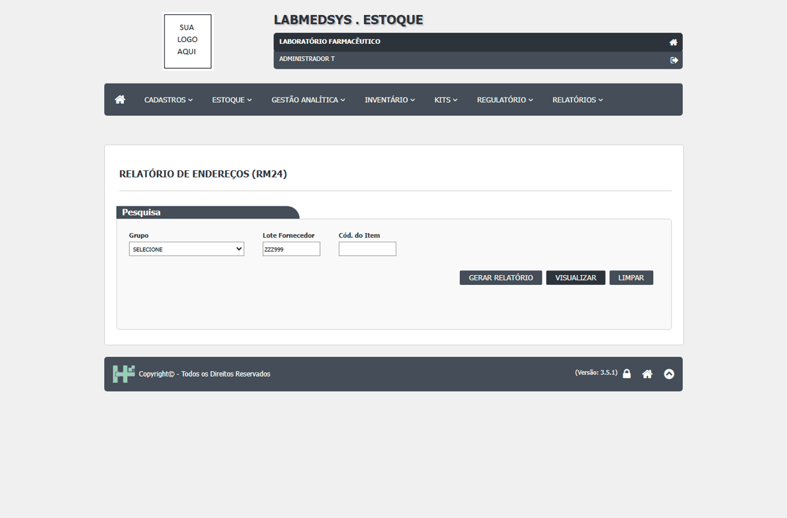
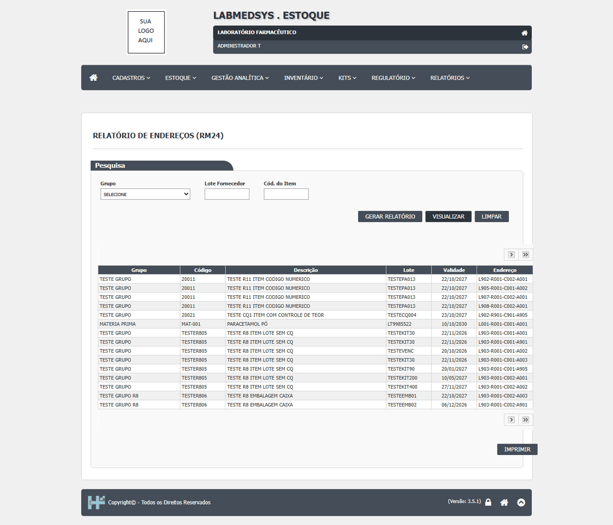

DV-EST-126 · RM18 e RM24 (e o filtro de lote em geral): sem resultado, a tela fica em branco, sem a mensagem "nenhum resultado"
Ao pesquisar um lote que não existe (`ZZZ999`) com VISUALIZAR, a tela do RM18 e a do RM24 ficam sem grade e sem nenhuma mensagem, mesmo esperando 9 segundos. No RM36 o mesmo teste responde "A pesquisa não retornou nenhum resultado."; aqui a pessoa não sabe se a consulta falhou ou se não há dado.
Como reproduzir o erro, passo a passo
- Abrir RM18 (ou RM24), digitar ZZZ999 no lote e clicar em VISUALIZAR.
Esperado
"A pesquisa não retornou nenhum resultado."
Obtido
Tela em branco, sem grade e sem mensagem.
Evidência (captura da tela)

DV-EST-127 · O PDF do Relatório de Endereços (RM24) sai com as descrições dos itens deslocadas
No PDF do RM24 a coluna Descrição não acompanha a linha: o `TST0003` aparece com "PARACETAMOL PÓ" e com "TESTE MATERIA PRIMA", o `TST0001` com "INSUMO DE DIÓXIDO DE TITANIO" e o `MAT-001` fica sem descrição. É o mesmo tipo de deslocamento do RM17 (DV-EST-062). A grade da tela mostra a descrição certa. A leitura foi feita no texto do PDF; falta conferir o desenho.
Como reproduzir o erro, passo a passo
- Abrir RM24, clicar em GERAR RELATÓRIO sem filtro e ler o PDF.
Esperado
Cada linha com a descrição do seu item.
Obtido
Descrições trocadas entre linhas.
Evidência (captura da tela)
